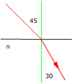
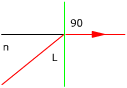
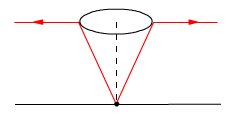
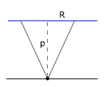
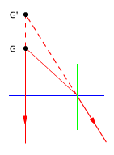
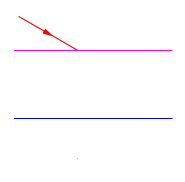
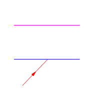
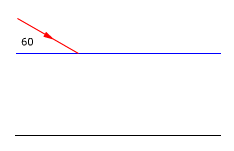
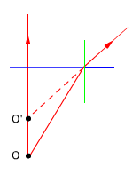

Refracción. Dioptrio plano
1Cuando el ángulo de
incidencia de la luz sobre un medio transparente es de 45º, el ángulo
de refrac-ción es 30º. Calcula:
a)
El índice de refracción del medio
b) El
ángulo límite de dicha sustancia con relación al
aire
Solución
|  |
$$1\cdot\operatorname{sen}\,45=n\cdot\operatorname{sen}\,30\;\rightarrow\;n=\frac{\operatorname{sen}\,45}{\operatorname{sen}\,30}=1{,}41$$ La velocidad de la luz en el medio es 1.41 veces menor que en el aire, por eso en este medio el rayo de luz se acerca más a la normal |
|  |
El ángulo límite es el ángulo de incidencia al que corresponde un ángulo de refrac-ción de 90º (Esta situación sólo es posible cuando la luz pasa de un medio lento a otro rápido) $$\begin{aligned}&n\cdot\operatorname{sen}\,L=1\cdot\operatorname{sen}\,90\;\rightarrow\;L=\operatorname{asen}\left(\frac{1}{n}\right)\\[6pt] &L=\operatorname{asen}\left(\frac{1}{1{,}41}\right)=45{,}2^\circ\end{aligned}$$ Un rayo que incida con ángulo mayor de 45.2º se reflejará y no pasará al otro lado aunque la superficie de separación entre medios sea transparente |
 |
¿Con qué ángulo i respecto a la vertical debe mirar un submarinista S, que está bajo el agua, para ver un pequeño objeto P que está sobre su superficie? Velocidad de la luz: 2.3·108 m/s (Agua), 3·108 m/s (Aire)
|
Solución
Para empezar, tanto el dibujo como la redacción de la pregunta producen confusión en mentes poco avezadas. Si el submarinista S ve el objeto P es porque hay un rayo que va desde P hasta S
 |
$$\begin{aligned}&n\cdot\operatorname{sen}\,90=n'\cdot\operatorname{sen}\,i\\[6pt] &\operatorname{sen}\,i=\frac{n}{n'}\;\rightarrow\;i=\operatorname{asen}\left(\frac{n}{n'}\right)\end{aligned}$$ |
El problema del problema es que en vez de dar los índices de refracción, dan las velocidades de la luz en cada medio. Pues no hay problema, basta con recordar que el índice de refracción es el cociente de la velocidad de la luz en el vacío entre la velocidad de la luz en el medio:
$$\begin{aligned}&i=\operatorname{asen}\left(\frac{c/v}{c/v'}\right)=\operatorname{asen}\left(\frac{v'}{v}\right)\\[6pt] &i=\operatorname{asen}\left(\frac{2{,}3\cdot10^{8}\ \mathrm{m/s}}{3\cdot10^{8}\ \mathrm{m/s}}\right)=50^\circ\end{aligned}$$
Esta es la dirección en que debe mirar el submarinista para que le llegue un rayo procedente de P
3Un foco luminoso puntual se encuentra situado en el fondo de un estanque lleno de agua de n = 4/3 y a 1 m de profundidad. Emite luz en todas las direcciones. En la superficie del agua se observa una zona circular iluminada de radio R. Calcula el radio R del círculo luminoso
Solución
|  |
Los rayos están pasando de un medio lento
(n = 4/3) a uno rápido |
|
 |
|
Combinando las expresiones obtenidas resulta:
$$\begin{aligned}&\left.\begin{aligned}&\operatorname{sen}\,L=\frac{1}{n}\\[4pt]&\operatorname{sen}\,L=\frac{R}{\sqrt{R^2+p^2}}\end{aligned}\right\}\quad\htmlData{pc-ac=ac2}{\boxed{R=\frac{p}{\sqrt{n^2-1}}}}\\[6pt] &R=\frac{1\ \mathrm{m}}{\sqrt{(4/3)^2-1}}=1{,}13\ \mathrm{m}\end{aligned}$$
4Un foco puntual está en el fondo de un lago a 18 m de la orilla. Un observador, en el borde del lago, cuyo ojo está a 1.5 m sobre el suelo desplaza lentamente su mirada partiendo de la orilla y observa que el primer rayo de luz que emerge del agua lo hace a 6 m de la orilla ¿Cuál es la profundidad del lago?
Solución
El asunto se reduce a segir la trayectoria del rayo desde el foco hasta el ojo del observador
|
|
|

Combinando las expresiones obtenidas resulta el sistema de ecuaciones:
$$\begin{aligned}&\left.\begin{aligned}&n\cdot\operatorname{sen}\,i=1\cdot\operatorname{sen}\,r\\[4pt]&\operatorname{sen}\,i=\frac{d_1}{\sqrt{d_1^2+p^2}}\\[4pt]&\operatorname{sen}\,r=\frac{d_2}{\sqrt{d_2^2+h^2}}\end{aligned}\right\}\quad\htmlData{pc-ac=ac3}{\boxed{p=\sqrt{\left(\frac{n\,d_1}{d_2}\right)^2(d_2^2+h^2)-d_1^2}}}\\[6pt] &p=\sqrt{\left(\frac{(4/3)\;12\ \mathrm{m}}{6\ \mathrm{m}}\right)^2\left((6\ \mathrm{m})^2+(1{,}5\ \mathrm{m})^2\right)-(12\ \mathrm{m})^2}=11{,}3\ \mathrm{m}\end{aligned}$$


5Una gaviota vuela a 3 m de
altura sobre la superficie del mar (Índice de refracción
del agua = 1.33)
a)
¿A qué altura la verá un pez?
b) Suponiendo
que el pez estuviera a 3 m bajo la superficie ¿a qué profundidad
le vería la gaviota?
Solución
 |
Mirando desde el agua los rayos que salen de la gaviota G parecen venir de un punto G' situado más alto |
Combinando las expresiones obtenidas resulta el sistema:
$$\left.\begin{aligned}&\operatorname{sen}\,i=n\cdot\operatorname{sen}\,r\\[4pt]&\operatorname{tg}\,i=\frac{d}{h}\\[4pt]&\operatorname{tg}\,r=\frac{d}{h'}\end{aligned}\right\}$$
Para estudiar la formación de
imagenes por un dioptrio plano se consideran solo rayos que llegan muy
próximos a la normal (Es lo mismo que se hace en los espejos curvos
y lentes).
Para ángulos pequeños el seno y la tangente coinciden, por
tanto el sistema se reduce a:
$$\begin{aligned}&\frac{d}{h}=n\cdot\frac{d}{h'}\\[6pt] &h'=n\,h=1{,}33\cdot3\ \mathrm{m}=3{,}99\ \mathrm{m}\end{aligned}$$
 |
Mirando desde el aire los rayos que salen del pez P parecen venir de un punto P' situado a menos profundidad |
|
|
Combinando las expresiones obtenidas resulta el sistema:
$$\left.\begin{aligned}&n\operatorname{sen}\,i=\operatorname{sen}\,r\\[4pt]&\operatorname{tg}\,i=\frac{d}{p}\\[4pt]&\operatorname{tg}\,r=\frac{d}{p'}\end{aligned}\right\}$$
Para estudiar la formación de
imagenes por un dioptrio plano se consideran solo rayos que llegan muy
próximos a la normal (Es lo mismo que se hace en los espejos curvos
y lentes).
Para ángulos pequeños el seno y la tangente coinciden, por
tanto el sistema se reduce a:
$$\begin{aligned}&n\,\frac{d}{p}=\frac{d}{p'}\\[6pt] &p'=\frac{p}{n}=\frac{3\ \mathrm{m}}{1{,}33}=2{,}26\ \mathrm{m}\end{aligned}$$


6Un rayo de luz
monocromática que se propaga en el aire incide sobre la
superficie del agua, cuyo índi-ce de refracción respecto
al aire es 1.33 . Calcular el ángulo de incidencia para que el
rayo reflejado sea perpendicular al rayo refractado
Solución
|
|
|

Combinando las expresiones obtenidas resulta:
$$\left.\begin{aligned}&n_1\operatorname{sen}\,i=n_2\operatorname{sen}\,r\\[4pt]&i+90+r=180\end{aligned}\right\}\quad\htmlData{pc-ac=ac6}{\boxed{i=\operatorname{atg}\frac{n_2}{n_1}}}$$
El cociente del índice del agua (n2) entre el índice del aire (n1) es el índice relativo del agua respecto al aire (n21) que sabemos que vale 1,33
$$i=\operatorname{atg}1{,}33=53{,}1^\circ$$
7Sea un estanque cuya superficie
está cubierta por una capa de aceite. Se pide:
a)
Si un haz de luz pasa del aire al aceite con un ángulo de
incidencia de 40º, calcular el ángulo de refracción
en el agua
b) Si
un haz de luz procedente del fondo del estanque pasa del agua al aceite,
calcular el ángulo de incidencia en el agua para que la luz no
penetre en el aire
Índices de refracción:
Agua = 1.33, Aceite = 1.45
Solución
| |
 |
|
Combinando las dos expresiones obtenidas resulta un sistema:
$$\begin{aligned}&\left.\begin{aligned}&1\cdot\operatorname{sen}\,i=n\operatorname{sen}\,r\\[4pt]&n\operatorname{sen}\,r=n'\operatorname{sen}\,r'\end{aligned}\right\}\;\rightarrow\;\operatorname{sen}\,i=n'\operatorname{sen}\,r'\\[6pt] &r'=\operatorname{asen}\left(\frac{\operatorname{sen}\,i}{n'}\right)=\operatorname{asen}\left(\frac{\operatorname{sen}\,40}{1{,}33}\right)=28{,}9^\circ\end{aligned}$$
| |
 |
|
Combinando las dos expresiones obtenidas resulta un sistema:
$$\begin{aligned}&\left.\begin{aligned}&n'\operatorname{sen}\,i=n\operatorname{sen}\,r\\[4pt]&n\operatorname{sen}\,r=1\end{aligned}\right\}\;\rightarrow\;n'\operatorname{sen}\,i=1\\[6pt] &i=\operatorname{asen}\left(\frac{1}{n'}\right)=\operatorname{asen}\left(\frac{1}{1{,}33}\right)=48{,}8^\circ\end{aligned}$$
8Un rayo de luz incide sobre la superficie del agua contenida en un vaso formando ángulo de 60º con esta, el rayo refractado se refleja en el fondo del vaso, que es plano, y emerge por la superficie libre del agua. Siendo el índice de refracción del agua 4/3, determina el ángulo que forma el rayo emer-gente con la normal
Solución
Un detalle: el problema da el ángulo que forma el rayo con la superficie (60º) pero el ángulo que interesa es el que forma el rayo con la normal a la superficie (30º)
| |
 |
Combinando las expresiones obtenidas resulta el sistema:
$$\left.\begin{aligned}&1\cdot\operatorname{sen}\,i=n\cdot\operatorname{sen}\,r\\[4pt]&n\cdot\operatorname{sen}\,r=1\operatorname{sen}\,e\end{aligned}\right\}\;\rightarrow\;e=i=30^\circ$$
9Un buzo de 1.8 m de altura se
encuentra de pie en el fondo de un lago de 5 m de profundidad. Calcula
la distancia mínima a la que se encuentran los puntos del fondo
del lago que el buzo puede ver refle-jados en la superficie del agua.
Índice de refracción del agua = 4/3
Solución
Si el buzo ve un rayo reflejado internamente en la superficie del agua, el ángulo de incidencia de dicho rayo será como mínimo el ángulo límite (Mejor dicho: un pelin mayor que el ángulo límite)
|
|
|

Combinando las relaciones obtenidas resulta un sistema:
$$\left.\begin{aligned}&n\operatorname{sen}\,L=1\\[4pt]&\operatorname{sen}\,L=\frac{d_1}{\sqrt{d_1^2+p^2}}\\[4pt]&\operatorname{sen}\,L=\frac{d_2}{\sqrt{d_2^2+(p-h)^2}}\end{aligned}\right\}\quad\htmlData{pc-ac=ac7}{\boxed{d_1=\frac{p}{\sqrt{n^2-1}},\qquad d_2=\frac{p-h}{\sqrt{n^2-1}}}}$$
$$\begin{aligned}&d=d_1+d_2=\frac{p}{\sqrt{n^2-1}}+\frac{p-h}{\sqrt{n^2-1}}\\[6pt] &d=\frac{2p-h}{\sqrt{n^2-1}}=\frac{2\cdot5\ \mathrm{m}-1{,}80\ \mathrm{m}}{\sqrt{(4/3)^2-1}}=9{,}3\ \mathrm{m}\end{aligned}$$
El punto del fondo más próximo que puede verse por reflexión está a 9.3 m


10Mirando desde el borde de un estanque se ve el fondo a 1.5 m ¿qué profundidad tiene el estanque? Índice de refracción del agua = 1.33
Solución
 |
Ver el fondo quiere decir ver un objeto colocado en el fondo Mirando desde el aire los rayos que salen de O parecen venir de un punto O' situado a menos profundidad |
Combinando las expresiones obtenidas resulta el sistema:
$$\left.\begin{aligned}&n\operatorname{sen}\,i=\operatorname{sen}\,r\\[4pt]&\operatorname{tg}\,i=\frac{d}{p}\\[4pt]&\operatorname{tg}\,r=\frac{d}{p'}\end{aligned}\right\}$$
Para estudiar la formación de
imagenes por un dioptrio plano se consideran solo rayos que llegan muy
próximos a la normal (Es lo mismo que se hace en los espejos curvos
y lentes).
Para ángulos pequeños el seno y la tangente coinciden, por
tanto el sistema se reduce a:
$$\begin{aligned}&n\,\frac{d}{p}=\frac{d}{p'}\\[6pt] &p=n\,p'=1{,}33\cdot1{,}5\ \mathrm{m}=2{,}0\ \mathrm{m}\end{aligned}$$
El objeto está más profundo de lo que parece
11Un rayo luminoso llega a la
superficie de separación de dos medios con un ángulo de
incidencia i. Si los rayos reflejado y refractado forman un ángulo
de 90º, hallar la relación entre el ángulo de inciden-cia
y el índice de refracción relativo de los medios
Solución
|
|
|

Combinando las expresiones obtenidas resulta:
$$\begin{aligned}&\left.\begin{aligned}&n_1\operatorname{sen}\,i=n_2\operatorname{sen}\,r\\[4pt]&i+90+r=180\end{aligned}\right\}\xrightarrow{(2)}r=90-i\\[6pt] &n_1\operatorname{sen}\,i=n_2\operatorname{sen}\,(90-i)\;\rightarrow\;n_1\operatorname{sen}\,i=n_2\cos i\\[6pt] &\operatorname{tg}\,i=\frac{n_2}{n_1}=n_{21}\end{aligned}$$
El cociente del índice del agua (n2) entre el índice del aire (n1) es el índice relativo del agua respecto al aire (n21)